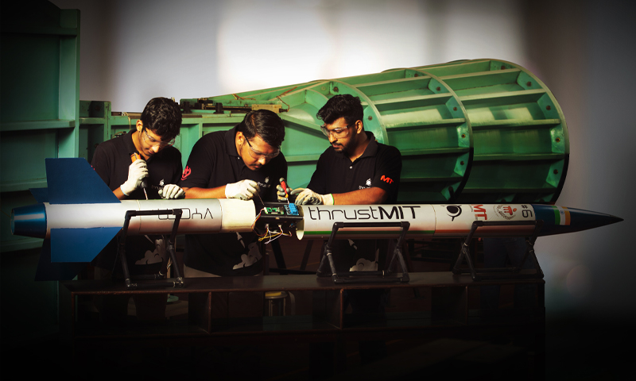

Intro

I build machine learning systems for clinical products, where patient data has to stay inside the building. That constraint shapes the whole stack: open-weight models fine-tuned and served on in-house GPUs, retrieval that has to answer in under a second, and speech pipelines that run per clinic rather than in a shared cloud.
At Docs4D I work on SuperDoc, a patient-facing multi-agent clinical assistant for chat and voice built with a German university hospital partner, on MedScribe's clinical transcription pipeline, and on DocScan's OCR service. Earlier I built Azure-based LLM agents with enterprise customers at Vodafone, and co-authored an IEEE paper on neural-network access-interval prediction at the Vodafone Chair at TU Dresden.
I hold an M.Sc. in Computational Modeling and Simulation from TU Dresden (final grade 1.7). My thesis applied knowledge-graph retrieval and neuro-symbolic reasoning to multimodal EHR diagnosis prediction. I came to machine learning from mechanical engineering, which is where the habit of taking a problem end to end comes from.
Start with the Résumé, the Projects or the Research — or write to arjun.sivasankar@gmail.com.
Résumé
AI engineer with hands-on machine learning work across industry and research. Based in Trier, Germany; open to relocation.
Experience
AI Engineer Docs4D GmbH
Trier, Germany · 03/2026 – Present
- Fine-tuned an open-weight LLM with LoRA for the clinical domain and served it through a vLLM API on in-house GPUs, keeping patient data off third-party APIs.
- Built the RAG pipeline end to end, from document parsing and hierarchical chunking to Qdrant hybrid search and cross-encoder reranking; batching the reranker brought retrieval under one second with no loss in context recall.
- Developed SuperDoc with a German university hospital partner: a patient-facing multi-agent clinical assistant (LangGraph) for chat and voice, with a separate validation layer around the generation core for EU MDR conformity.
- Built SuperDoc's real-time conversational voice agent (speech-to-text, LLM, text-to-speech) as back-end services behind a gateway and integrated it into the Guardian iOS and Android app.
- Designed the speech pipeline for MedScribe: streaming NVIDIA Parakeet ASR for live text, Whisper for background correction and speaker diarization, with per-clinic data isolation.
- Built DocScan, an OCR service for patient document upload, and the Frontline medical dashboard in Next.js that integrates it with MedScribe.
- Set up evaluation and observability with Langfuse tracing, MLflow experiment tracking and RAGAS scoring, and A/B-tested agent prompts and open-weight models to choose the baseline.
- Wrote SQL migrations and row-level security policies for the Supabase (PostgreSQL) production backend.
Applied AI Intern Vodafone Group Services GmbH
Germany · 11/2024 – 09/2025
- Worked directly with enterprise customers to build LLM agents on Microsoft Azure (Azure AI Foundry), from experimentation to integration into their products and the Vodafone Assist platform.
- Built an on-premise transcription service for the 6G-HEALTH research project that transcribes, separates speakers and summarizes doctor–patient conversations in real time to automate clinical notes.
Student Research Assistant Vodafone Chair, TU Dresden
Dresden, Germany · 05/2023 – 10/2024
- Built and trained PyTorch models that forecast memory-access intervals in hardware accelerators from time-series data; co-authored the resulting IEEE ACDSA 2024 paper.
- Wrote PyTorch quantization-aware training pipelines to evaluate model accuracy at sub-8-bit precision.
Engineer L&T Technology Services
India · 01/2021 – 08/2022
- Built Design Structure Matrices across a wind-turbine architecture to classify interfaces by criticality for standardized change management, and wrote a Python network-analysis tool that builds them from correlation data.
- Automated PLM data extraction from Windchill with Selenium and built Power BI dashboards for validation.
Automotive Research Intern Gannet Engineering
Bangalore, India · 01/2020 – 05/2020
- Planned engine test points with design-of-experiments methods and compared regression and machine-learning models of NOx and soot emissions; the selected model met the target of under 10% prediction error.
Education
M.Sc. Computational Modeling and Simulation Technische Universität Dresden
Dresden, Germany · 2022 – 2026 · Final grade 1.7
Track Computational Engineering, focused on machine learning, deep learning and data science. Master's thesis: Multimodal EHR-based Diagnosis Prediction via Knowledge Graph & Neuro-Symbolic Reasoning — LoRA-fine-tuned Llama models, UMLS knowledge-graph retrieval and neuro-symbolic evaluation on MIMIC-IV (code).
B.Tech. Mechanical Engineering Manipal Institute of Technology
Manipal, India · 2016 – 2020 · CGPA 8.81 / 10
Minor in Machine Design. Bachelor's thesis: Optimization of Engine Emissions using Numerical Modelling, DoE & Machine Learning.
Skills
LLMs & GenAI
LoRA fine-tuning, prompt engineering, RAG (hybrid search, cross-encoder reranking, Qdrant), multi-agent systems (LangGraph, MCP), evaluation and A/B testing (RAGAS, LLM-as-judge)
Deployment
On-premise GPU inference (vLLM, SGLang, NVIDIA DGX), Docker, Kubernetes, Terraform, CI/CD and code review (GitLab CI, GitHub), AWS, Azure AI Foundry, MLflow, Langfuse
Full-Stack
Next.js, REST APIs, microservices, PostgreSQL (Supabase, SQL migrations, row-level security), Redis
ML & Deep Learning
Python, PyTorch, TensorFlow, scikit-learn, time-series forecasting, NLP, quantization-aware training
Speech & Document AI
Speech recognition (Whisper, NVIDIA Parakeet), speaker diarization, summarization, text-to-speech, OCR document processing
Regulated AI
EU MDR, IEC 62304 and ISO 13485 medical-device software, EU AI Act
Projects
Multimodal EHR-based Diagnosis Prediction Master's thesis
Knowledge graphs · Neuro-symbolic reasoning · LoRA · MIMIC-IV
Neuro-symbolic ICD-9-CM prediction over MIMIC-IV: current-visit coding (53,561 admissions) and next-visit prediction within twelve months (26,522 admissions). LoRA-fine-tuned Llama-3.2-1B, Llama-3.1-8B and Meditron-8B, with CodeGen versus TextGen grounding through SapBERT and FAISS, and UMLS knowledge-graph path retrieval with relation weighting.
Result: TextGen beat CodeGen by roughly +0.20 micro-F1; knowledge-graph-augmented fine-tuning lifted micro-F1 from 0.459 to 0.503 (+9.7%) on Llama-3.1-8B, with tail-class F1 up 26–46%. Code on GitHub.
Conductivity Reconstruction with Invertible Neural Networks
Research project · TU Dresden
Reconstructed high-resolution conductivity maps from low-resolution magnetic-field data with invertible neural networks, while selecting a reduced sensor set that preserves reconstruction quality.
Traffic Sign Classification GTSRB
Course project · Advanced Methods in Data Analytics
Convolutional neural network for German traffic sign recognition on the GTSRB benchmark. Code on GitHub.
Research
Enlarging the Time Budget for Neural Network Based Predictors for Access Interval Prediction
IEEE ACDSA 2024 · pp. 1–7 · co-authored with S. Friedrich, E. Matúš and G. Fettweis
Neural-network-based predictors of memory-access intervals in hardware accelerators, written during a research assistantship at the Vodafone Chair Mobile Communication Systems, TU Dresden. DOI 10.1109/ACDSA59508.2024.10467779.
A System for Ejection Indian patent, granted 02/2024
Application No. 201941044944 · filed 11/2019
Canister-aided gas ejection mechanism, developed for the sounding rocket built by Team thrustMIT for the 2019 Spaceport America Cup.
Team thrustMIT Mechanical Head and Deputy Project Manager
Manipal Institute of Technology · 09/2017 – 08/2019
Led 24 students to design, analyze and build a sounding rocket for Spaceport America 2019 in New Mexico. Designed structural components in CATIA and ANSYS, fabricated the fuselage and tube couplers from composites, and developed the parachute ejection system. Awarded an On the Spot Recognition Award at the competition.
Contact
I am open to AI engineering and data science roles, and to relocating. Email is the fastest way to reach me.